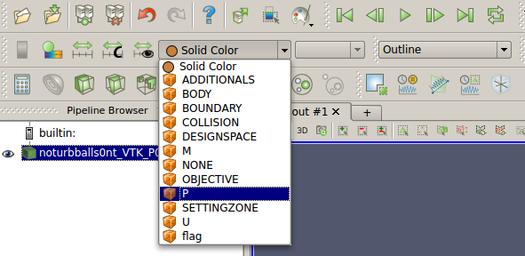
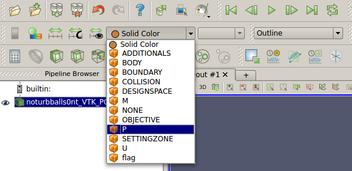
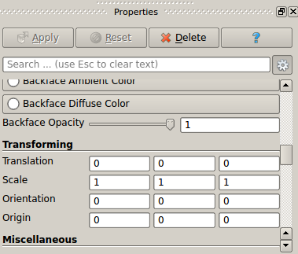

Results of the calculations can be analyzed using ParaView, an open-source, multi-platform data analysis and visualization application. It can be easily installed by running
sudo apt-get install paraview
Or, if you want to install newer version, it can be downloaded here.
Paraview can open most of the files generated by the TCLB solver(.pvti,.csv) or required to run calculations(.stl).
.vti |
VTK files generated by the <VTK> callback in .xml case files. Each solver thread creates its own .vti file when saving them. That’s why (usually) you do not want to open files with this extension. |
.pvti |
Files linking separate .vti files, opening them will allow navigation through whole domain/time. |
.csv |
Log files generated by the <Log> callback in .xml case files. Containing all the values of Settings and Globals defined in Dynamics.R TODO:podlinkować |
.xml |
Configuration files, containing .xml case file and information about code version/compilation settings. |
.stl |
Geometry files. |
Loading file
ParaView can be started either from the start menu or the terminal. When using the latter it is possible to specify which file should be opened:
paraview output/d2q9_poiseuille_VTK_P00_..pvti
File(s) can be opened by right clicking on icon in the left-top corner or using ctrl+o, to choose multiple files hold ctrl while picking. After chosing the file, click Apply in the properties menu to load it. It is possible to chose at this point which data to load, which is especially usefull when analysing bigger cases.

Note: What is displayed here depends on what is defined in Dynamics.R
Changing display options
After loading file you will see only the outline of the domain, as this is the default display option and default displayed data is ‘Solid Color’. You can change it by choosing another option from the list.Let’s try viewing pressure in the middle of the domain - to do this we need to switch display option to Slice and displayed data to P. (see images below)
 

After that it should look like this:

Notice how the presented colours are only on the one side of the spectrum. Spectrum can be rescaled either automatically to data range, or by manually providing the values.

TODO: moze opisać który to który
It is possible that sometimes the automatic rescaling is not working as expected, it is usually caused by elements inside/near inlet/outlet which have enourmously high/low values. The same case after rescaling:

Using the Slice display option we can choose where to slice in the Properties menu:
Q-Criterion
Find
Gradient Of Unstructured DataSet in
Filters menu( or use built in search function -
ctrl+spacebar). Chose velocity array(
U) as
Scalar Array in
Properties menu and mark the box labeled
Compute QCriterion. You will now be able to display calculated
Q-criterion by switching displayed array.

Threshold
Find (ctrl+spacebar) Threshold function, then pick which values will be checked. For example, to separate studied object from the rest of the flow pick BOUNDARY(it’s equal to 1 for Wall nodes and 0 for flow nodes).

If you want to get rid of the walls you can use Extract Subset filter to pick a portion of domain without walls and apply threshold later.
Plot Over line
After picking Plot Over Line filter you can either specify the end points in Properties menu or manipulute them using mouse.
After clicking Apply a new window will open with the plot. You can choose wchich variables to use in Properties menu(along other options).
Viewing STL geometry
You can use ParaView to view .stl files. This comes in handy when you need to import .stl geometry in your case, but don’t know which parameters to use. By loading .stl along with you generated domain(in .pvti file) .stl geometry can be quickly fitted to your domain. For this purpose use Transforming in Properties menu. The same values should work while loading .stl in .xml file.
